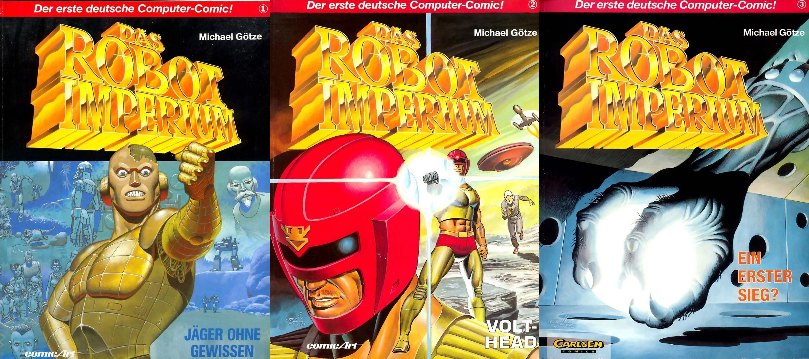
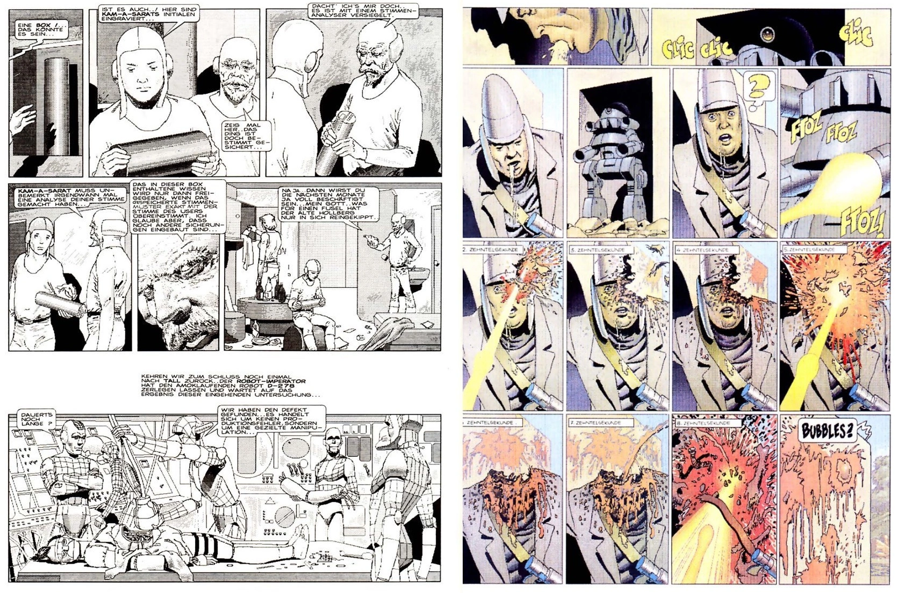
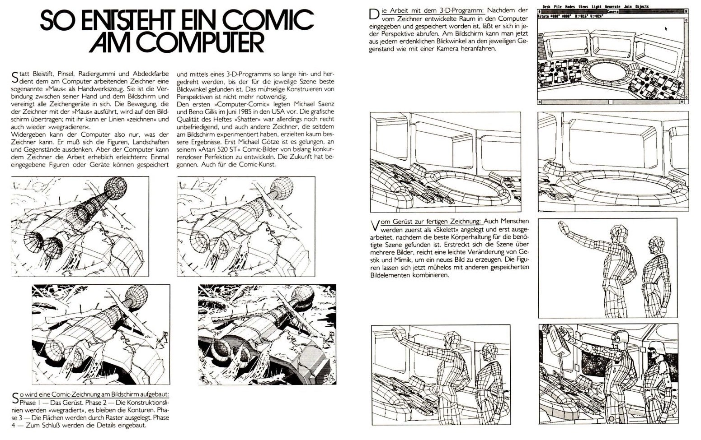

Dots by Any Other Name
IV. The Other First Computer Comic
"Someone asked me the other day what it feels like to see all my 'old stuff' reappearing, at long last, in digital. And I had to smile because to me it doesn't feel like 'old stuff.'"
- Barbara Hambly
While Mike Saenz was the first to produce and publish a complete comic book on a computer, other artists quickly followed. In 1988, German comic book artist Michael Götze created the Das Robot Imperium comic album. This was the first European comic created on a computer. He did not use an Apple Macintosh to create this black-and-white comic, but instead the Atari 520ST, an affordable competitor of the Mac that also came with a mouse by default.

Figure 26 Michael Götze's traditionally painted covers for Das Robot Imperium volumes 1 to 3 (Source: Das Robot Imperium by Michael Götze, Carlsen Comics Verlag, 1988, 1990, 1992)
Pixel Imperium
The comic's story chronicled the fight of a small group of humans against the robots who ruled over them. Even in the 1980s, this was not the most original plot. Like Shatter, this comic's main selling point was that the artist created it on a computer.
Even though the first volume of Das Robot Imperium "Jäger ohne Gewissen" ('Hunter without a conscience") eschews the use of color, it is a far more lavish and elaborate work compared to Shatter. The scenes depicted in the panels have depth and dimensionality. The figures are not flat like in Shatter, Goetze renders the characters' faces with much greater expressiveness. He took much more time to produce each page than the fast release schedule of Shatter would allow.

Figure 27: Left: interior BW page from volume one Das Robot Imperium: Jäger ohne Gewissen. Right: interior pages from volume two Das Robot Imperium: Volthead
The Creation Process
On the Atari ST, Götze programmed his own 3D wireframe application and special printing software using GFA-Basic. In the application he called Pixelart, Götze created 3D models of the human body and put them in different poses. Then he combined the figures with flat backgrounds. He also modeled props and mechanical backgrounds like a command center in 3D. Once the 3D models were created, he could place them in the scene and create complicated perspectives with the wireframe models. Eventually, Goetze had a library of objects that he could reuse.
He would laboriously touch up the images in the Atari ST paint application D.E.G.A.S. Elite using the mouse to give them the final polish.
Work on Robot Imperium started in 1986 on the first of three volumes in the European album format. Götze drew the first volume in black-and-white. The gradients were dot patterns printed with a typical dot-matrix printer used in offices at the time: the Epson FX-80.
The back of the first two volumes shows a photo of the artist Götze toiling away on his Atari ST. And the last few pages of the first volume describe Götze's process for drawing the panels on the Atari ST: "This Is How a Comic Is Made on a Computer" ("So entsteht ein Comic am Computer"). From today's perspective, it might appear comedic that the process description includes a short explanation of how a computer mouse works. There even is mention of Shatter by Mike Saenz and Peter B. Gillis (inexplicably, Gillis is referred to as Bernd Gillis in the text). The piece's writer does not show high regard for Saenz' computer art, calling it "unsatisfactory" and "experimental."
The most interesting parts of this description were the screenshots of the individual steps in Götze's creation process. They show how he places the rudimentary 3D model of a spaceship over a rough sketch of the background foliage in a forest scene. The wireframes of the spaceship show all sides, even the parts that should be obscured from the viewer. Götze manually cleans up the image, meticulously removing the lines that should not be visible. Then he embellishes the manually-drawn backgrounds, thus integrating them with the 3D model. Then he spots the black areas and emphasizes individual lines to give them more weight. Finally, he shades the image in dotted patterns for different levels of light and dark.
Artistically, this painstaking process proved to be very successful. The drawings are very much in the style of the French bandes desinée of the 1980s. This speaks to the artist's craftsmanship. Götze followed the first volume with the second one titled "Volthead" in 1990, this time in full color. It was printed on a dot-matrix printer in multiple passes with different colored ribbons.

Figure 28: A description of the process of creating a computer comic in Das Robot Imperium: Jäger ohne Gewissen
The Ghost of A Different Future
In 1992, Götze released the third volume "Ein erster Sieg?" ("A First Victory?") with an even greater level of detail in his drawings and an even greater level of artistic accomplishment. Its slickness moved it so close to the traditionally drawn and colored analog comics to make it indistinguishable at first glance. This also meant that despite all the effort put into it, the comic lost one of its most distinguishing features. It lost the "look" of a computer comic.
Commercially, Das Robot Imperium ended up not being very successful. It remains a testimony to artistic dedication, adventurous graphical experimentation, and the stubbornness to make the best use of the capabilities of a barely suitable computer to achieve professional results.